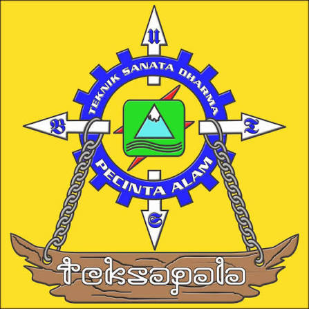

UKF Teksapala merupakan Unit Kegiatan Fakultas yang menjadi wadah bagi mahasiswa yang memiliki minat terhadap kegiatan alam bebas, petualangan, dan kegiatan di lingkungan alam. Teksapala mengajarkan anggota untuk memiliki rasa tanggung jawab, kerja sama, kedisiplinan, keberanian, dan kepedulian terhadap alam.
Dalam kegiatannya, anggota Teksapala tidak hanya melakukan kegiatan di alam bebas, tetapi juga belajar mengenai cara menjaga lingkungan, keselamatan perjalanan, kerja sama dalam kelompok, serta kemampuan menghadapi berbagai kondisi ketika berada di alam.

Teksapala menjadi tempat bagi mahasiswa untuk mengembangkan kemampuan diri melalui pengalaman dan kegiatan di alam. Setiap anggota diajarkan untuk saling membantu, menjaga kekompakan, serta bertanggung jawab terhadap diri sendiri, kelompok, dan lingkungan.
Kegiatan Teksapala meliputi berbagai aktivitas alam bebas, seperti pendakian gunung, camping, pendidikan dasar, kegiatan konservasi, latihan navigasi darat, serta kegiatan lainnya yang berkaitan dengan alam dan lingkungan.
Angkatan merupakan bagian penting dalam perjalanan anggota Teksapala. Setiap angkatan memiliki pengalaman, kebersamaan, dan proses belajar yang berbeda selama mengikuti kegiatan Teksapala.
Angkatan: Diksar XIX
Nama: Geby Emilia Dolla br Tarigan
NIM: 255314143
Program Studi: Informatika
| No | Nama Anggota | Angkatan |
|---|---|---|
| 1 | Geby Emilia Dolla Br Tarigan | Diksar XIX |
| 2 | Icha Olivianti Welin | Diksar XIX |
| 3 | Nuizah Bilqis Salsabila | Diksar XIX |
| 4 | Nova Mila | Diksar XIX |
| 5 | Ratna Cempaka Br Ginting | Diksar XIX |
Menjadi bagian dari Teksapala bukan hanya tentang kegiatan di alam bebas, tetapi juga tentang kebersamaan, persahabatan, pengalaman, dan proses belajar. Setiap perjalanan memberikan pengalaman baru yang dapat menjadi kenangan bagi setiap anggota.
"Menjelajah alam, belajar dari perjalanan, dan tumbuh bersama Teksapala."
UKF Teksapala
Kegiatan: Alam Bebas dan Lingkungan
Angkatan: Diksar XIX